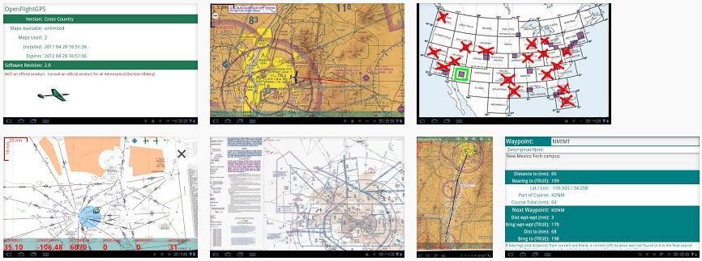

Offline Georeferenced Aviation Charts
OpenFlightGPS is an open source Android applicationdeveloped to allow offline georeferenced viewing of various FAA products. The products are minimally processed in order to work with OpenFlightGPS. Therefore, the maps are NOT OFFICIAL INFORMATION SOURCES. ALWAYS consult official sources for aeronautical decision making. OPENFLIGHTGPS is NOT INTENDED for inflight navigation use; your use of OpenFlightGPS constitutes acceptance of these terms.
Most phone GPS chips, and many tablet GPS chips, are not very accurate and may take a long time and a clear sky to get a GPS 'fix'. So-called aGPS (GPS assisted by cell tower position) may not be available in your location, or if you are operating without cell service, so OpenFlightGPS may seem to perform more poorly than other GPS applications. This would be soley a function of the hardware GPS, and not the OpenFlightGPS software.
OpenFlightGPS works on Android-powered devices, including cell phones and most tablets. We suggest that maps only be downloaded when the user is connected to the internet via WIFI, but 3G can be used in a pinch, as the individual maps are between 2 megabytes all the way to almost 20 megabytes, depending upon the particular product (such as Low Enroute, Sectional, WAC). Users may download individual maps as per the terms of their licensed version. The maker of OpenFlightGPS is NOT responsible for data charges you may incur from your cellular provider in downloading maps. If you wish to purchase maps on a CD, please contact us for minimal fee products we will send you.
OpenFlightGPS is developed on the open source Android system because we believe that vendor-lock-in endemic to some other solutions is not in the best interests of pilots. The FAA provides the digital base products for FREE, so we believe in repackaging and selling these products for very low cost.
You may notice some geographical distortion on various maps. This is due to the projection of the worlds (spherical) surface onto a flat map. This distortion is not seen on the printed paper copies because the paper copies do not preserve the georeferencing information that is encoded in the digital product as distributed by the FAA. The maps, while being converted to tiles, have georeference information preserved in order to provide the GPS features of OpenFlightGPS.
The main features of OpenFlightGPS are the GeoReferenced (moving map) Products
And the NON GeoReferenced Products
Each of which are presented in the Map Navigator as scrollable, zoomable maps.
Supporting features are:
OpenFlightGPS can show ownship position oriented in the direction of GPS movement, and gradually scroll the map to keep the ownship centered in the the view (moving map). Another option is to have the ownship display coupled to the 'compass' mode, so that the ownship will point in the direction on the map that the Android device itself is pointed.
OpenFlightGPS also displays a scale in the upper left corner of the screen in order to allow the user to estimate distances at any map zoom level. To the right side of the scale, the GPS coordinates in Latitude, Longitude and altitude (feet) appear when the unit has a GPS lock (coordinates will not display without GPS lock).
When the hardware gets a GPS lock, the ownship will automatically appear with a 'centerline' extended showing the GPS-computed heading, or the compass heading depending upon the mode selected (see below). If there is no GPS lock, the ownship will not appear. If not in compass mode, and a GPS lock is obtained but no motion is detected, the ownship will change to a 'house' icon.
Compass appears in upper left corner. After GPS acquires position: ownship 'aircraft' icon appears at your location and points in direction on the map that device is pointed. Position and altitude coordinates appear in the center or upper right hand corner.
"Reset Map" will center ownship in display.
Compass does not appear. After GPS acquires position: if motion is detected by the GPS, ownship 'aircraft' icon appears at your current location and points in the direction on the map of the motion. If no motion is detected, ownship will change to a 'house' at your current location. Position and altitude coordinates appear in the upper right hand corner.
"Reset Map" will center ownship in display.
Neither compass, ownship nor position and altitude coordinates will appear on the screen.
"Reset Map" will position the map at the approximate center of the physical map that is currently open.
When OpenFlightGPS is started up, you will be presented with a Chart Chooser of your "home map". This is a user selectable home map. As shipped, the "VFR Sectional" chooser is set as the home map. Change the home map by selecting the Android "menu" key, selecting the "Preferences" tab, and going to "Home Map". Select the home map that you want to come up by default; close the preferences by using the device backbutton.
You can change the current Chart Chooser at any time by selecting the Android "menu" key, then selecting "Products" item, and then choosing the Chart Chooser you want.
Use a Chart Chooser by finger-pressing on the area chart you wish to view - the charts that are available (have been previously downloaded to your device) are outlined in green, and will flash red when selected. When you release the press, you may be presented with a context menu that allows a subselection, for example for "North" or "South" of the area.
The Chart Chooser presents a geographic area (United States) with "hot" areas that correspond to charts available for that area. Each of the chart sections (such as VFR sectional 'Albuquerque') appear as either a red 'X', a green slash ('/'), or a green outline. The red 'X' means neither of the portions (in this case, 'North' and 'South') are currently downloaded on your device. A green slash '/' means that one of the portions (either 'North' or 'South') are present on your device. A green outline means the both portions are currently on your device.
Either way, finger press the 'X', '/' or outline and you will be presented with a 'North'/'South' dialog. Choose which chart you are interested in and if the chart is not on the device you will be prompted to download it; otherwise, the Map Navigator will come up with your map in the center. If you do download a chart, the Chart Chooser will automatically update it's symbol ('X', '/', outline).
You can cancel a selection by sliding your finger (before lifting your finger from the device screen) to a non-outlined area on the Chart Chooser and then lifting your finger.
Downloaded maps will persist until you delete them or overwrite them with a new version. They will persist through uninstall of the program. If you wish to manually delete the maps, first find out the location on your device by going to the Android 'menu' key and selecting the 'Preferences' menu item. The preferences item 'Data Directory' is the file path on your device to the charts. Each distinct chart is contained within a '.zip' file found in the data directory. You may use a file manager application to delete or move the zip files.
The Message Display will show your currently selected map in the Android Notification Bar at the top of the screen, or "Cancelling ..." if you cancel your selection.
While the Map Navigator is running, touch the Android "menu" key to bring up the following option menus:
Go directly back to the Chart Chooser.
Redownload the current map.
Reset the view to either the physical map center, or centered upon the ownship.
Remove the current map from the cache directory. After the map is then closed, it will no longer be available through the Chart Chooser. This action will decrement the downloaded map count, freeing up for a new download.
The following preferences may be set:
While the Chart Chooser is running, touch the Android "menu" key to bring up the following option menus:
Show the licensing, version and map statistics.
Offline users guide.
Scroll to the preference you wish to change, and make your changes. The changes will be automatically change when you backbutton out of the preferences screen"
Select the Chart Chooser you wish to use:
If GPS position is already acquired and the map corresponding to your current position exists on the device (has already been downloaded), that map will open and your current position will be centered.
Download maps by first connecting your Android device to a WIFI network - the maps are large, and distributing them OTA would be very time consuming - although it will work in a pinch. After you have connected your device to your wifi network, open the OpenFlightGPS application as you normally would, go to your desired Chart Chooser, and select the chart that you want to download. If the chart is found to be non-existant or out-of-date on your device, you will be presented with a screen that will allow you to download the map. You may open other applications on your phone while the download is proceeding, but don't "backbutton" out of OpenFlightGPS or the download will be cancelled.
You may force the redownload of a map that the device thinks you already have by going to that map, selecting the Android 'menu' button, then choosing the 'Force Download' menu item.
If you know your way around your device, you may download the maps manually, and install them on your device. Contact us at 'openflightmap<at>gmail.com' if you would like to purchase entire map sets either on DVD/CD or Micro-SD.
Things we are working on:
Please let us know if there are other things you would like to see in OpenFlightGPS.
Always verify all maps against an official source for Aeronautical Decision Making.
OpenFlight Map is not free to develop and to provide maps for. Please donate to help fund continued operation and development!! Click here to donate through PayPay (sic)
OpenFlightGPS would not be possible without the generous contributions to open source software made by many, many unsung heros. Specific technology used by OpenFlightGPS include: